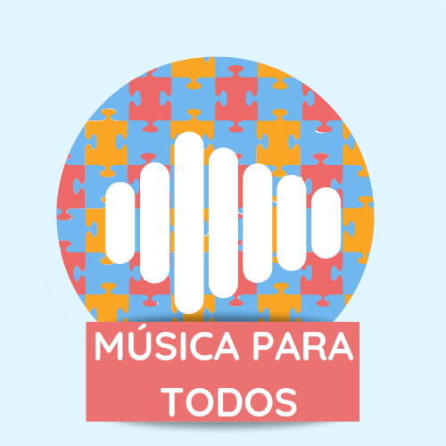

Sobre nós

Acreditamos que crianças especiais tem total capacidade de desenvolvimento de aprendizado, só é necessário saber explicar.
Por isso, criamos um site para auxiliar os pais a estimularem as habilidades musicais de seus filhos especiais.
Segundo o Professor Gustavo Schulz Gattino, em relação à música, as pessoas com autismo tendem a apresentar uma capacidade intacta para percepção de melodias simples e um desempenho superior a indivíduos com desenvolvimento típico para processar elementos locais melódicos.
O fato de a compreensão dos sentimentos e a expressão emocional estarem aparentemente preservadas entre as pessoas com autismo quando elas são expostas às musicas indica oportunidades e possibilidades amplas de trabalhos terapêuticos que envolvam o desenvolvimento da comunicação, do aprendizado e da interação social a partir da Musicoterapia.
A Musicoterapia voltada às pessoas com autismo teria como objetivos o desenvolvimento de talentos e habilidades mediado pelas experiências musicais. A música poderia beneficiar o tratamento de crianças, adolescentes e adultos ao:
-
possibilitar a ação das pessoas com autismo dentro da estrutura temporal da música, através de participações livres, da exploração de instrumentos e de improvisações;
-
oferecer oportunidades de auto-expressão e de vivências criativas, como experiências de comunicação e interação entre pares sem a necessidade do discurso verbal;
-
oferecer alternativas de expressão e comunicação de modo socialmente adequado;
-
apresentar oportunidades para que as pessoas com autismo possam assumir responsabilidades com os demais indivíduos, por exemplo, quando os mesmos estão produzindo música juntos;
-
propiciar o aumento da comunicação verbal e não-verbal entre os pares;
-
possibilitar a aprendizagem de regras sociais para poder replicá-las em outros ambientes e contextos.